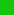
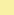
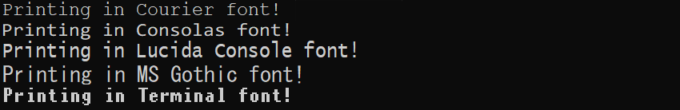

Cursor
Cursor writes in console window all text. You can change its position, color and font.
Table of Set functions
- bool setPosition(int x, int y)
- bool setColor(Color foreground, Color background=CURRENT)
- bool setFontSize(int size)
- bool setFontChars(int columns, int rows)
- bool setFontPixels(int width, int height)
- bool setFontType(string name)
Table of Printing functions
- bool printChar(int x, int y, int character, Color color=CURRENT)
- bool printBlank(int x, int y)
- bool clearScreen()
Table of Get functions
- int getX()
- int getY()
- Color getColorForeground()
- Color getColorBackground()
- int getFontWidth()
- int getFontHeight()
- int getFontSize()
- string getFontType()
Information
Position
The cursor position indicates where text is going to be written. It is used every time you write a text. It is changed automatically but setting it manually provides a useful custom functionality.
The unit of position is a single character. You set position of cursor by calling a function with specified number of columns and rows. The top left corner of the window is marked as [0,0] or more precisely x = 0 and y = 0. The opposite bottom right corner can be obtained using Window functions. The character count of the window tells you many characters you can write in the current console without.
Characters are not screen pixels. The actual character size in pixels depends on many factors including screen size and font size. The default value is about 16×24 pixels large. Also check out the font information.
Color
Cursor color can be used to highlight different texts and to make simple graphics. There are 16 different colors to choose from. They are defined in as an integer enumeration called Color. This means you use Color constants only by their name without using object notation. Hexadecimal value is presented only as a reference.
| Color | Constant | HEX value | Color | Constant | HEX value |
|---|---|---|---|---|---|
| BLACK | #0c0c0c | GRAY | #767676 | ||
| BLUE | #0037da | LIGHTBLUE | #3b78ff | ||
| GREEN | #13a10e |  | LIGHTGREEN | #16c60c | |
| CYAN | #3a96dd |  |
LIGHTCYAN | #61d6d6 | |
| RED | #c50f1f | LIGHTRED | #e74856 | ||
| MAGENTA | #881798 | LIGHTMAGENTA | #b4009e | ||
| YELLOW | #c19c00 |  | LIGHTYELLOW | #f9f1a5 | |
| LIGHTGRAY | #cccccc | WHITE | #f2f2f2 |
CURRENT is a special type of color. It is the color which is at the moment in use.
Font
Font includes font size and font type. You can't have in one application characters of different sizes and fonts. Setting font changes all text in console therefore should be called at the start of the application. A good practice is to change a font only at the start of an application.
Font size is measured by size of one character. When setting a new font size you should be using a setFontSize() or setFontChars(). These functions change font size in respect of the console window size. It makes porting application to different screen size much more easier.
For headers and large texts you can use a ASCII Text
generator. When printing any ascii art, do not forget to add escape characters.
Change all \ to \\.
using namespace std; // use standard library for output
cout << " _____ _____ _____ _______ _________ _____ " << endl;
cout << " /\\ / ____|_ _|_ _| / ____\\ \\ / /__ __|_ _| " << endl;
cout << " / \\ | | | | | | | (___ \\ \\ /\\ / / | | | | " << endl;
cout << " / /\\ \\| | | | | | \\___ \\ \\ \\/ \\/ / | | | |" << endl;
cout << " / ____ \\ |____ _| |_ _| |_ ____) | \\ /\\ / | | _| |_ " << endl;
cout << "/_/ \\_\\_____|_____|_____| |_____/ \\/ \\/ |_| |_____| " << endl;

Font type is style of characters. Different font families exist and you can choose whichever you prefer. Windows console supports many monospace fonts with most usable being Consolas, Courier, Lucida Console, MS Gothic, Terminal. Use setFontType() function to set your favorite font.
You can also try some proportional fonts like Arial, Times New Roman, Tahoma, Impact, Modern, Roman, Symbol, Segoe UI. However some of these are a glitchy and should be used with caution. You can also try other fonts.
This image shows some of the fonts, but keep in mind that you can use only one font family at a time.

Constants
The new versions of windows console stopped supporting ascii characters. You can use Windows 1250 or UTF. You can also use following constants in your code. These box-drawing characters will work in both old and new windows console. Instead of writing Cursor.printChar(197) you can use handy Cursor.printChar(LINE_HV).
| Char | Constant | Description | Char | Constant | Description |
|---|---|---|---|---|---|
| ─ | LINE_H | horizontal | ═ | DLINE_H | horizontal |
| │ | LINE_V | vertical | ║ | DLINE_V | vertical |
| ┌ | LINE_UR | up right | ╔ | DLINE_UR | up right |
| ┐ | LINE_UL | up left | ╗ | DLINE_UL | up left |
| └ | LINE_DR | down right | ╚ | DLINE_DR | down right |
| ┘ | LINE_DL | down left | ╝ | DLINE_DL | down left |
| ┴ | LINE_HU | horizontal up | ╩ | DLINE_HU | horizontal up |
| ┬ | LINE_HD | horizontal down | ╦ | DLINE_HD | horizontal down |
| ├ | LINE_VR | vertical right | ╠ | DLINE_VR | vertical right |
| ┤ | LINE_VL | vertical left | ╣ | DLINE_VL | vertical left |
| ┼ | LINE_HV | crossed lines | ╬ | DLINE_HV | crossed lines |
| FILL_B | blank space | « | ARROWS_L | left arrows | |
| ░ | FILL_L | low dotted | » | ARROWS_R | right arrows |
| ▒ | FILL_M | medium dotted | ▄ | SQUARE_D | square down |
| ▓ | FILL_H | highly dotted | ▀ | SQUARE_U | square up |
| █ | FILL_F | full filled | ■ | SQUARE_M | square middle |
Examples
Following example writes colorful Hello world on screen with specified position.
Cursor.setPosition(5,2);
Cursor.setColor(YELLOW);
std::cout << "Hello world!" << std::endl;
These are examples show usage of colors.
Cursor.setColor(MAGENTA, LIGHTCYAN);
Cursor.printChar(12, 3, 'D', GREEN);
Cursor.printChar(4, 9, FILL_F, GREEN);
Window.setColor(CURRENT, WHITE);
These are examples where usage of font.
Cursor.setFontSize(22);
Cursor.setFontType("Lucida Console");
std::cout << "Printing some text";
Functions
bool setPosition(int x, int y)
This function sets the position of cursor. When you call any standard function to print a text, first character will be on the set position. Next characters will continue right and down. The cursor position will not change if given position is outside the console window.
Parameters
int x - position in columns
int y - position in rows
Return value
Return type is bool. Return value is true if position was set successfully
or position is outside the console window. Return value is false if
unexpected error occurs.
Example
This example sets the cursor position to coordinates [12, 8] and writes there using C++ standard output, printf and putchar.
Cursor.setPosition(12, 8);
std::cout << "Hello ";
printf("world");
putchar('!');
bool setColor(Color foreground, Color background=CURRENT)
This function sets the color of cursor. It changes the foreground color of the printed characters and optionally you can also specify a background color. This function doesn't change already written characters (you can use Window.setColor() for that).
Parameters
Color - any color constant, foreground text color
Color - (optional) any color, default is current background text color
Return value
Return type is bool. Return value is true if color was set successfully, false if any error occurs.
Example
This example writes two texts on the screen. First is a yellow text without specific background color, second is magenta text with light cyan background.
Cursor.setColor(YELLOW);
std::cout << "Yellow text without background color";
Cursor.setColor(MAGENTA, LIGHTCYAN);
std::cout << "Magenta text on light cyan background";
bool setFontSize(int size)
This function sets the height of characters in console. It calculates size proportionally to current console size. It is the most convenient and easy way to set the font size. Setting font size changes all text in console.
Parameters
int - new character height. Size 15 is approximately 1/50 of the console height.
Return value
Return type is bool. Return value is true if font was set successfully, false if any error occurs.
Example
This example writes a text on screen with size of 28. Then it waits for user input. After user presses a key, it resizes the console size and adjusts the font size to new console size.
Cursor.setFontSize(28);
std::cout << "Press a key to change the screen size..." << std::endl;
Keyboard.waitUser();
Window.setSizePixels(1280,720);
Cursor.setFontSize(28);
bool setFontChars(int columns, int rows)
This function sets the font size in console. It calculates size proportionally to a given screen columns and rows. Setting font size changes all text in console.
Parameters
int - at most how many columns will font occupy
int - at most how many rows will font occupy
Return value
Return type is bool. Return value is true if font was set successfully, false if any error occurs.
Example
This example sets the font to squares and writes a filled tic tac toe board.
Window.setSizeChars(100, 50);
Cursor.setFontChars(50, 50);
std::cout << "XOX\nOXO\nXOX" << std::endl;
bool setFontPixels(int width, int height)
This function sets the font size in console. It sets the font equal to pixels. The result of this function depends heavily on console screen size in pixels. You probably should use pixel independent functions like setFontSize or setFontChars. Setting font size changes all text in console.
Parameters
int - width of font in pixels
int - height of font in pixels
Return value
Return type is bool. Return value is true if font was set successfully, false if any error occurs.
Example
This example sets the font to
Window.setSizeChars(100, 50);
Cursor.setFontChars(50, 50);
std::cout << "XOX\nOXO\nXOX" << std::endl;
bool setFontType(string name)
This function sets the font in console. The most common fonts are Consolas, Courier, Lucida Console, MS Gothic, Terminal. Setting font changes all text in console. More information about fonts is here.
Parameters
string - name of font as standard string. You can call this function
without creating variable (see example)
Return value
Return type is bool. Return value is true if font was set successfully, false if any error occurs.
Example
This example sets the font to Lucida Console and then changes the font size. Notice that the string is created using simple "Lucida Console".
Cursor.setFontType("Lucida Console");
Cursor.setFontSize(28);
bool printChar(int x, int y, int character, Color color=CURRENT)
This function prints one character on specified position. Additionally it can change a cursor color. To print a blank character you can use printBlank. To print more characters, use a setPosition and standard output.
Parameters
int - position in columns
int - position in rows
int - any character or Constant.
Color - (optional) any Color constant, default is CURRENT
Return value
Return type is bool. Return value is true if everything works,
false if any error occurs. If coordinates are outside screen it
prints nothing and returns true.
Example
This is example writes a horizontal symbol on specified position. Then it writes W letter if W key was pressed and hides it after release.
Cursor.printChar(3, 2, DLINE_V, LIGHTBLUE);
if (Keyboard.getPressed('W')) { Cursor.printChar(11, 5, 'W'); }
if (Keyboard.getReleased('W')) { Cursor.printBlank(11, 5); }
bool printBlank(int x, int y)
This function prints blank character on specified position. To print a other characters you can use printChar. To print more characters, use a setPosition and standard output.
Parameters
int - position in columns
int - position in rows
Return value
Return type is bool. Return value is true if everything works,
false if any error occurs. If coordinates are outside screen it
prints nothing and returns true.
Example
This is example creates a simple animation of X moving to right of the screen.
for (int i = 1; i <= 16; i++)
{
Cursor.printChar(i, 0, 'X', LIGHTGREEN);
Cursor.printBlank(i-1, 0);
Keyboard.wait(30);
}
bool clearScreen()
This function fills entire console with blank characters.
To hide only few characters you should use printBlank.
This function is a replacement for overused system("cls").
It is a more clean way to clear window.
Parameters
This function doesn't have any parameters.
Return value
Return type is bool. Return value is true if everything works,
false if any error occurs.
Example
This is example writes some text and then waits for user. After user presses a button, it clears the window.
std::cout << "Welcome in this awesome application.";
Keyboard.waitUser();
Cursor.clearScreen();
std::cout << "Do you want to show settings menu?";
int getX()
This function gets x coordinate of cursor. After start of the console program, cursor is automatically set to the top left corner and is moved by printing text. You can use this function if you don't know cursor coordinates, for example in functions. The best strategy is to save the position in local variable instead of calling this function in every step.
Parameters
This function doesn't have any parameters.
Return value
Return type is int. Return value is column position of cursor.
Example
This example prints a Kryten quote and warns the programmer that they forget to put escape character in it.
std::cout << "I knew I was lying. No silicon heaven?"
std::cout << "Preposterous! Where would all the calculators go?";
if (Cursor.getX() > 80)
{
std::cout << std::endl << "Line is too long, try adding \\n in it";
}
int getY()
This function gets y coordinate of cursor. After start of the console program, cursor is automatically set to the top left corner and is moved by printing text. You can use this function if you don't know cursor coordinates, for example in functions. The best strategy is to save the position in local variable instead of calling this function in every step.
Parameters
This function doesn't have any parameters.
Return value
Return type is int. Return value is row position of cursor.
Example
This example prints a simple rectangle at cursor position. Notice that we do not need to print end of line characters.
int cx = Cursor.getX();
int cy = Cursor.getY();
for (int y = cy; y < cy+5; y++)
{
Cursor.setPosition(cx, y);
std::cout << "~~~~~~";
}
Color getColorForeground()
This function returns printing color of the cursor. LIGHTGRAY is usually the default color. To change color instead, use Cursor.setColor().
Parameters
This function doesn't have any parameters.
Return value
Return type is Color. Return value is color constant. Only if error occurs, return value is CURRENT.
Example
This example writes text only if cursor color is light gray.
if (Cursor.getColorForeground() == LIGHTGRAY)
{
std::cout << "You are using gray cursor color.";
}
Color getColorBackground()
This function returns background printing color of the cursor. BLACK is usually the default color. To change color instead, use Cursor.setColor().
Parameters
This function doesn't have any parameters.
Return value
Return type is Color. Return value is color constant. Only if error occurs, return value is CURRENT.
Example
This example changes background color for full console window to black.
if (Cursor.getColorForeground() != BLACK)
{
Window.setColor(CURRENT, BLACK);
}
int getFontWidth()
This function returns pixel width of font. To get number of columns in console use Window.getColumns() instead.
Parameters
This function doesn't have any parameters.
Return value
Return type is int. Return value is width of cursor in pixels.
Example
This example writes font size ratio to console.
double cursor_ratio = (double) Cursor.getFontWidth() / Cursor.getFontHeight();
std::cout << "Ratio is " << cursor_ratio;
int getFontHeight()
This function returns pixel height of font. To get number of rows in console use Window.getRows() instead.
Parameters
This function doesn't have any parameters.
Return value
Return type is int. Return value is height of cursor in pixels.
Example
This example writes font size ratio to console.
double scale = (double) 100 * Cursor.getFontHeight() / Window.getHeight();
std::cout << "Your current scale is " << scale;
int getFontSize()
This function returns unit height of font. The number can differ from last Cursor.setFontSize due to different console size and low integer precision.
Parameters
This function doesn't have any parameters.
Return value
Return type is int. Return value is size of cursor in pixels.
Example
This example sets the font to twice the size.
int size = Cursor.getFontSize();
Cursor.getFontSize(size * 2);
std::cout << "Twice the power";
string getFontType()
This function returns name of console font. Only fonts with English letters will work and other characters will not be displayed correctly. Also note that Lucida Sans Typewriter font doesn't display correctly.
Parameters
This function doesn't have any parameters.
Return value
Return type is standard string. Return value is English string containing console font name.
Example
This function sets console font to Terminal if it is not already in use.
if (Cursor.getFontType() != "Terminal")
{
Cursor.setFontType("Terminal");
std::cout << "Running in the 90's";
}